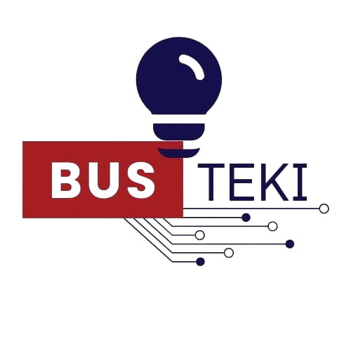

We Deliver Innovation
Empowering your business with the future of software, marketing, and tech transformation.
Let’s Collaborate
Empowering your business with the future of software, marketing, and tech transformation.
Let’s CollaborateAt Busteki, we ignite the spark that draws attention and inspires growth. We leave lasting impressions on your brand through tailored innovations, strategic marketing, and intelligent software solutions. We believe in a love affair between your brand and its audience.
We embrace new ideas and push boundaries to create unique solutions that stand out.
We believe in the power of working together, building strong relationships with our clients.
Our work is driven by a desire to create a positive and lasting impact on businesses and communities.
We are committed to delivering high-quality work that exceeds expectations every time.
We provide entrepreneurship training to SMEs, helping them turn innovative ideas into successful digital businesses.
Strategies that amplify your message and connect to your audience, including our groundbreaking Sauti.Market platform.
Robust custom applications and products built to scale with your business goals.
Turn your data into actionable insights that drive business growth and informed decision-making.
Sauti.Market is a youth-centered initiative that uses voice-based talents like singing, storytelling, and public speaking to inspire economic growth and financial literacy.
The platform provides tools and challenges that equip participants to turn their voices into opportunities.
Visit Sauti.MarketBusteki was born from a bold vision to empower businesses and unlock human potential through innovative tech. At its core is a leader who lives this mission daily.
Founder & Business Tech Coach
Jastin John Maile is a business technology coach and the visionary founder of Busteki. He currently serves as Partnership and Outreach Coordinator, dedicated coach and trainer at the Institute of Accountancy Arusha (IAA)...
We invite educational institutions to partner with Busteki Project and unlock ICT industrial training for your students. We offer custom programs tailored to your institution’s learning needs.
Explore Partnership